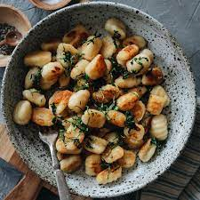

Gnocchi
Gnocchi is simple to make with just three ingredients: mashed potato, flour, and egg.

Description
Ingredients
How to Make Homemade Gnocchi
Here's a very brief overview of what you can expect when you make gnocchi:
- Boil and drain the potatoes, then mash or pass through a ricer.
- Combine the ingredients, then knead into a ball.
- Divide the dough into four even portions and shape into "snakes".
- Cut the snakes into pieces.
- Boil and drain the Gnocchi.